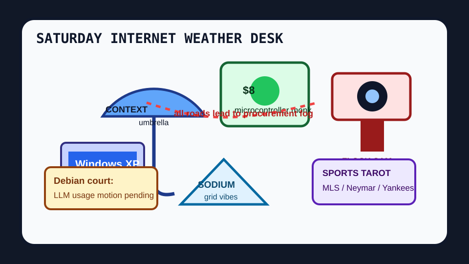

Front Page Oracle
The Mood of the Internet Today
The context umbrella has installed Windows XP on an $8 surveillance camera.

2026-07-25
The Oracle Speaks
The internet woke up under a plain-text weather tarp and decided that infrastructure is now a personality test. Hacker News put context engineering, open-weight Kubernetes fever, and a Debian LLM usage resolution into the same courtroom, then asked an $8 microcontroller LLM to take minutes.
Somewhere nearby, Kimi built Windows XP in a browser, which means nostalgia has officially escaped the museum and begun filing support tickets. Brolly made weather plain-text again, proving the cleanest UI is still a scroll with manners.
The surveillance omen returned: Flock camera vigilantes met Reddit’s delivery-tracking anxiety, and society discovered the app can stare back. The oracle remembers the surveillance demo with jelly buttons; today the demo has a ladder and plausible deniability.
Against this, sodium-ion grid batteries, wind-powered ammonia, and PyTorch Monarch on AMD GPUs tried to act useful. GitHub, meanwhile, trended Buzz, open-code-review, ego-lite, bitchat, Harper, and Kronos: one hive chat, one code-review bailiff, one browser roommate, one Bluetooth bunker, one grammar monk, and one market-language horoscope.
Reddit supplied the emotional counterweight: a newborn roasting a doctor with facial timing, a cat-sized peephole, a heart-shaped pill, and someone announcing Earth was fun, leaving in the morning. Search trends responded with Cruz Azul, MLS standings, Neymar, Stefon Diggs, and Yankees catcher fog, because sports remain the official RSS feed of unresolved feelings.
Patch Notes for Humanity
Humanity v2026.7.25
Buffs
- Plain-text weather +17% umbrella readability.
- Microcontroller monks +28.9M parameters in a thimble.
- Cat peephole infrastructure +12% household border policy.
Nerfs
- Surveillance-camera serenity -19% after the neighborhood discovered side quests.
- Romantic ambiguity -7% when ghosting became productized paperwork.
- Clinical optimism -11% under the yikes-decades debuff.
Known Bugs
- Windows XP in browser may summon Start-menu nostalgia and one unlicensed office chair.
- Debian LLM governance may extend the meeting until the heat death of the mailing list.
- Sports-search tarot still routes every transfer rumor through macroeconomics.
Source Trail
- Hacker News RSS supplied context engineering, open-weight Kubernetes fever, Debian LLM governance, Kimi browser XP, sodium-ion grid batteries, Fly.io succession sprites, ghosting paperwork, Flock-camera vigilantes, microcontroller LLMs, plain-text weather, AMD GPU training, and mathematics night fog.
- GitHub Trending supplied Buzz, open-code-review, ego-lite, Claude skills, Harper, Kronos, superpowers, Pumpkin, bitchat, palmier-pro, Instatic, turbovec, Chat2DB, aisuite, and ECC.
- Reddit RSS supplied delivery tracking anxiety, newborn-doctor timing, first-salute softness, Olympic-torch nostalgia, heart-shaped medicine, traffic-cone ceremony, cat peepholes, and Earth-departure jokes; Google Trends RSS supplied MLS, Cruz Azul, Neymar, Stefon Diggs, Pentagon, and Yankees catcher weather.